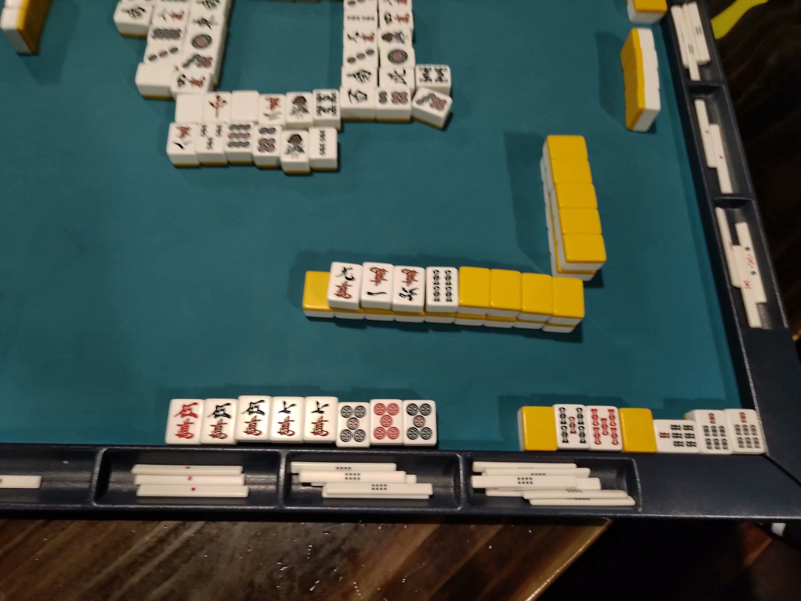
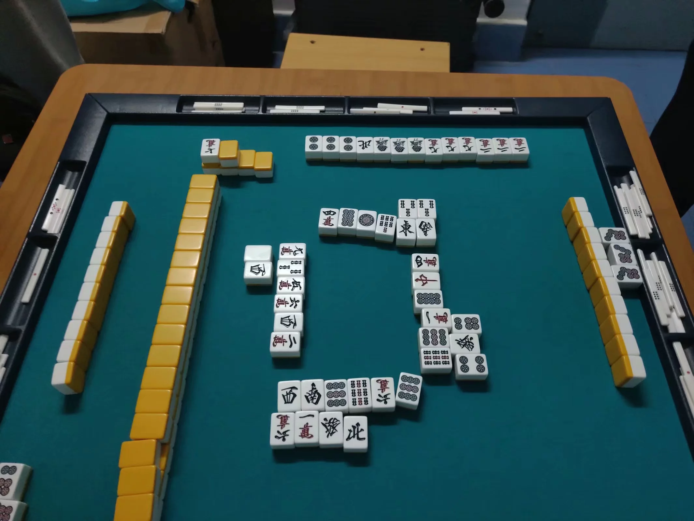

不懂麻将者可直接看简洁题意。
面麻的时候经常大家已经坐好了，然后抽了每个人对应的自风（也就是坐的位置），每次可以交换相邻的两个人，问让这四个人逆时针顺序依次为$ $东 南 西 北$ $最少需要交换几次。
简洁题意：可以理解为有一个长度为 $4$ 的环，上面的元素构成一个长度为 $4$ 的排列，每次可以交换环上相邻两个位置，问至少交换多少次，使得这个环中值为 $1$ 的位置逆时针方向的下一个位置是值为 $2$ 的位置，再下一个位置是值为 $3$ 的位置，再下一个位置是值为 $4$ 的位置(也可能不用交换就满足条件，此时答案就是 $0$)。
(简洁题意中，可想像成数字 $1,2,3,4$ 是对应到东南西北)
一行四个数，代表逆时针顺序给出环上的元素，保证是一个 $1 \sim 4$ 的排列。
输出一行一个数表示最小交换次数。
3 1 2 4
1
样例解释：交换第一个数和第四个数之后顺序就是 $4,1,2,3$ 了，满足题目要求顺序($1$ 的逆时钟方向下个数是 $2$，再下个数是 $3$,再下个数是 $4$)。
 Comet OJ
Comet OJ